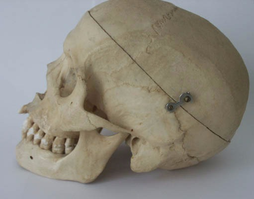
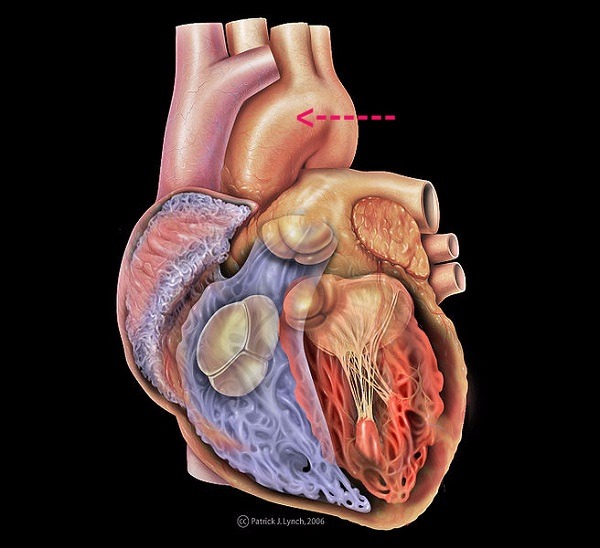

1
Choose the best answer to fill in
the blank to indicate where the
part of the body is located. The
spine is _______________ to the
abdominal region.
Choose one answer.
| a. Dorsal | ||
| b. Transverse | ||
| c. Ventral | ||
| d. Sagittal | ||
| e. Inferior |
Question 2
Choose the best answer to fill in
the blank to indicate where the
part of the body is located. The
foot is ______________ to the knee.
Choose one answer.
| a. Ventral | ||
| b. Longitudinal | ||
| c. Lateral | ||
| d. Superior | ||
| e. Inferior |
Question 3
This picture shows a skull with a
cut made through the top of it.
Imagining the skull upright, as it
would be naturally, in which plane
was this cut made? (Image Source:
Bernard, Bill. Wikimedia: Creative
Commons, Attribution-Share Alike
3.0 Unported, 2004.)

Choose one answer.
| a. Transverse | ||
| b. Oblique | ||
| c. Across | ||
| d. Sagittal | ||
| e. Ventral |
Question 4
Where is the diaphragm located?
Choose one answer.
| a. Abdomen | ||
| b. Hypogastric region | ||
| c. Inguinal area | ||
| d. Dorsal cavity | ||
| e. Thorax |
Question 5
Which body system is responsible
for systemic immune response?
Choose one answer.
| a. Cardiovascular System | ||
| b. Integumentary System | ||
| c. Lymphatic System | ||
| d. Endocrine System | ||
| e. Respiratory System |
Question 6
Which body system provides a
protective covering for the body
and all of the systems within the
body?
Choose one answer.
| a. Lymphatic system | ||
| b. Respiratory system | ||
| c. Sensory system | ||
| d. Integumentary system | ||
| e. Reproductive system |
Question 7
Which two body systems work
together to allow gas exchange
(oxygen in, carbon dioxide out)
throughout all the tissues in the
body?
Choose one answer.
| a. Respiratory and lymphatic systems | ||
| b. Cardiovascular and endocrine systems | ||
| c. Endocrine and urinary systems | ||
| d. Respiratory and cardiovascular systems | ||
| e. Endocrine and lymphatic systems |
Question 8
This picture shows a skull cut in
half. In which plane was the cut
made? (Image Source: McCormack,
Tim. Wikimedia: Creative Commons,
Public Domain, 2005.)

Choose one answer.
| a. Dorsal | ||
| b. Coronal | ||
| c. Sagittal | ||
| d. Transverse | ||
| e. Vertical |
Question 9
A hair is made up of which of the
following?
Choose one answer.
| a. A medulla, cortex, and cuticle | ||
| b. A fasciculus and inner cortex | ||
| c. An epithelium and root | ||
| d. An epithelium, root, and cuticle | ||
| e. A single layer known as the hair shaft |
Question 10
Fill in the blank. Sebaceous glands
are in skin all over the body,
except on the _______________.
Choose one answer.
| a. Nose | ||
| b. Ears | ||
| c. Palms of hands and soles of feet | ||
| d. Armpit | ||
| e. Scalp |
Question 11
What do ceruminous glands secrete?
Choose one answer.
| a. Sebum | ||
| b. Sweat | ||
| c. Milk | ||
| d. Ear wax | ||
| e. Mucus |
Question 12
What do sudoriferous glands
secrete?
Choose one answer.
| a. Sebum | ||
| b. Milk | ||
| c. Odor | ||
| d. Ear wax | ||
| e. Sweat |
Question 13
What is the part of the nail that
originates from the living tissue
of the nail matrix called?
Choose one answer.
| a. Free margin | ||
| b. Nail plate | ||
| c. Nail sinus | ||
| d. Nail root | ||
| e. Nail body |
Question 14
Where are apocrine sweat glands
located?
Choose one answer.
| a. All over the body | ||
| b. Everywhere except palms of hands and soles of feet | ||
| c. In the armpit, around the nipples, and in the groin area | ||
| d. On the face and scalp | ||
| e. Only in the armpit |
Question 15
Where are merocrine, or eccrine,
sweat glands located?
Choose one answer.
| a. All over the body | ||
| b. Everywhere except palms of hands and soles of feet | ||
| c. In the armpit, around the nipples, and in the groin area | ||
| d. On the face and scalp | ||
| e. Only in the armpit |
Question 16
What is the innermost layer of the
skin called?
Choose one answer.
| a. Epidermis | ||
| b. Mesodermis | ||
| c. Dermis | ||
| d. Subdermis | ||
| e. Hypodermis |
Question 17
Fill in the blank. The vomer is a
_____________.
Choose one answer.
| a. Facial muscle | ||
| b. Facial bone | ||
| c. Muscle in phalanges | ||
| d. Back bone | ||
| e. Bone in the knee |
Question 18
The ethmoid bone forms part of
which structure?
Choose one answer.
| a. Chin | ||
| b. Cheek | ||
| c. Thumb | ||
| d. Ear | ||
| e. Nose |
Question 19
What are the names of the bones in
the wrist?
Choose one answer.
| a. Phalanges | ||
| b. Carpals | ||
| c. Metacarpals | ||
| d. Os Coxae | ||
| e. Tarsus |
Question 20
What kind of joint is the elbow?
Choose one answer.
| a. Ginglymus | ||
| b. Ball and socket | ||
| c. Synarthrosis | ||
| d. Synchondrosis | ||
| e. Trochoid |
Question 21
Where is the ulna located?
Choose one answer.
| a. Lower leg | ||
| b. Inguinal area | ||
| c. Upper leg | ||
| d. Forearm | ||
| e. Foot |
Question 22
Which bone connects the hip socket
to the knee?
Choose one answer.
| a. Humerus | ||
| b. Femur | ||
| c. Tibia | ||
| d. Patella | ||
| e. Fibula |
Question 23
Which of the following is NOT a
part of the skull?
Choose one answer.
| a. Zygomatic bone | ||
| b. Maxilla | ||
| c. Coccyx | ||
| d. Alveolar margin | ||
| e. Temporal process |
Question 24
Which of the following joints can
perform both flexion and adduction?
Choose one answer.
| a. Knee | ||
| b. Hip | ||
| c. Elbow | ||
| d. Metacarpal | ||
| e. Both B and D |
Question 25
Which of the following lists the
regions of vertebrae from top to
bottom?
Choose one answer.
| a. Cervical, thoracic, lumbar, sacral | ||
| b. Sacral, thoracic, lumbar, cervical | ||
| c. Thoracic, cervical, lumbar, sacral | ||
| d. Sacral, thoracic, cervical, lumbar | ||
| e. Lumbar, thoracic, cervical, sacral |
Question 26
What is the condition in which
bones are porous and the bone
density is reduced called?
Choose one answer.
| a. Fibromyalgia | ||
| b. Osteitis | ||
| c. Osteoporosis | ||
| d. Myelopoiesis | ||
| e. Osteomalacia |
Question 27
Fill in the blank. The gracilis is
located proximally to the
____________.
Choose one answer.
| a. Sartorius | ||
| b. Rectus femoris | ||
| c. Iliacus | ||
| d. Rectus abdominis | ||
| e. Frontalis |
Question 28
The masseter aids in what action?
Choose one answer.
| a. Throwing a ball | ||
| b. Lifting a dumbbell | ||
| c. Chewing | ||
| d. Standing up | ||
| e. Sitting down |
Question 29
Where is the latissimus dorsi
located?
Choose one answer.
| a. Directly next to the spine | ||
| b. In the foot | ||
| c. In the lower back | ||
| d. In the inguinal area | ||
| e. Below the scapula |
Question 30
Where is the sartorius muscle
located?
Choose one answer.
| a. Forearm | ||
| b. Abdomen | ||
| c. Upper leg | ||
| d. Upper arm | ||
| e. Shoulder |
Question 31
Which muscle adducts the humerus?
Choose one answer.
| a. Coracobrachialis | ||
| b. Biceps brachii | ||
| c. Deltoid | ||
| d. Sartorius | ||
| e. Triceps brachii |
Question 32
Which muscle allows you to raise
your eyebrows?
Choose one answer.
| a. Orbicularis oculi | ||
| b. Frontalis | ||
| c. Orbicularis oris | ||
| d. Soleus | ||
| e. Extensor retinaculum |
Question 33
Which of the following muscles aids
in pointing the foot?
Choose one answer.
| a. Fibularis tertius | ||
| b. Gastrocnemius | ||
| c. Tibialis anterior | ||
| d. Biceps femoris | ||
| e. Rectus femoris |
Question 34
Which type of muscular tissue has
intercalated discs?
Choose one answer.
| a. Cardiac | ||
| b. Smooth | ||
| c. Skeletal | ||
| d. Maxillary | ||
| e. Striated |
Question 35
Bundles of nerve cell bodies are
known as which of the following?
Choose one answer.
| a. Gray matter | ||
| b. White matter | ||
| c. Nodes of Ranvier | ||
| d. Dendrites | ||
| e. Axons |
Question 36
Fill in the blank. Motor neurons
exit the spinal cord through the
______________.
Choose one answer.
| a. Dorsal root | ||
| b. Ventral root | ||
| c. Thoracic vertebra | ||
| d. Somatic area | ||
| e. Neuromuscular junction |
Question 37
The digestive tract is innervated
by which subsection of the nervous
system?
Choose one answer.
| a. Central | ||
| b. Somatic | ||
| c. Autonomic | ||
| d. Dendritic | ||
| e. Ventral |
Question 38
Where is the thalamus located?
Choose one answer.
| a. Prefrontal cortex | ||
| b. Throat | ||
| c. Mesencephalon | ||
| d. Diencephalon | ||
| e. Brainstem |
Question 39
Which area of the body is affected
by the T4 spinal nerve?
Choose one answer.
| a. Ankle | ||
| b. Shoulder | ||
| c. Big toe | ||
| d. Pectorals | ||
| e. Upper leg |
Question 40
Which of the following statements
is true of cranial nerve X?
Choose one answer.
| a. Cranial nerve X is the vagus, involved in heart rate and digestion. | ||
| b. Cranial nerve X is the trigeminal, involved in sensation of the mouth and chewing. | ||
| c. Cranial nerve X is the vestibulocochlear, involved in hearing and balance. | ||
| d. Cranial nerve X is the trigeminal, involved in cyclical movements. | ||
| e. Cranial nerve X is the vagus, involved in the swallowing reflex. |
Question 41
Which of the following statements
is true of cranial nerve VI?
Choose one answer.
| a. Cranial nerve VI is the hypoglossal, which controls the tongue. | ||
| b. Cranial nerve VI is the oculomotor, which moves the eye. | ||
| c. Cranial nerve VI is the hypoglossal, which aids in taste. | ||
| d. Cranial nerve VI is the abducens, which is involved in visual perception. | ||
| e. Cranial nerve VI is the abducens, which moves the eye from side to side. |
Question 42
Which lobe of the brain is located
at the very back of the head?
Choose one answer.
| a. Temporal | ||
| b. Occipital | ||
| c. Frontal | ||
| d. Somatosensory | ||
| e. Premotor |
Question 43
Fill in the blank. The iliac
arteries stem from the
______________.
Choose one answer.
| a. Descending aorta | ||
| b. Genicular artery | ||
| c. Femoral artery | ||
| d. Brachial artery | ||
| e. Carotid artery |
Question 44
Fill in the blanks. The pulmonary
vein carries blood from the
______________ to the
______________.
Choose one answer.
| a. Arms, heart | ||
| b. Head, heart | ||
| c. Heart, lungs | ||
| d. Lungs, heart | ||
| e. Lungs, brain |
Question 45
The red arrow in this picture
indicates what structure? (Image
Source: Lynch, Patrick. Wikimedia:
Creative Commons, Attribution 2.5
Generic, 2006.)

Choose one answer.
| a. Aorta | ||
| b. Pulmonary artery | ||
| c. Vena cava | ||
| d. Pulmonary vein | ||
| e. Genicular artery |
Question 46
The vena cava supplies blood to
which of the following?
Choose one answer.
| a. Left ventricle | ||
| b. Right atrium | ||
| c. Lungs | ||
| d. Left atrium | ||
| e. Arms |
Question 47
Where are genicular arteries
located?
Choose one answer.
| a. Surrounding the ulna | ||
| b. In the neck | ||
| c. In the hand | ||
| d. Surrounding the knee | ||
| e. Attached to the aorta |
Question 48
Where is the cephalic vein located?
Choose one answer.
| a. In the neck | ||
| b. Along the back of the leg | ||
| c. In the arm | ||
| d. Surrounding the knee | ||
| e. Between the heart and lungs |
Question 49
Where is the saphenous vein
located?
Choose one answer.
| a. In the arm | ||
| b. In the leg | ||
| c. In the neck | ||
| d. In the abdomen | ||
| e. In the scalp |
Question 50
Where is the tricuspid valve
located?
Choose one answer.
| a. Between the right ventricle and left ventricle | ||
| b. Between the right ventricle and the pulmonary vein | ||
| c. Between the left atrium and aorta | ||
| d. Between the coronary artery and marginal artery | ||
| e. Between the right atrium and right ventricle |
Question 51
The red arrow in this picture
indicates what structure? (Image
Source: Lynch, Patrick. Wikimedia:
Creative Commons, Attribution 2.5
Generic, 2006.)

Choose one answer.
| a. Left ventricle | ||
| b. Right ventricle | ||
| c. Right atrium | ||
| d. Left atrium | ||
| e. Septum |
Question 52
Monocytes from the bone marrow give
rise to which type of immune cells?
Choose one answer.
| a. Lymphocytes | ||
| b. B cells | ||
| c. Macrophages | ||
| d. T cells | ||
| e. Killer cells |
Question 53
What is the lymphatic organ found
within the rib cage but below the
diaphragm called?
Choose one answer.
| a. Thymus | ||
| b. Spleen | ||
| c. Tonsils | ||
| d. Great node | ||
| e. Lymphatic vessel |
Question 54
What is the lymphatic organ located
between the lungs and above the
heart called?
Choose one answer.
| a. Thymus | ||
| b. Spleen | ||
| c. Tonsils | ||
| d. Great node | ||
| e. Lymphatic vessel |
Question 55
What part of the body produces T
cells?
Choose one answer.
| a. Spleen | ||
| b. Right lymphatic duct | ||
| c. Bone marrow | ||
| d. Thymus | ||
| e. Tonsils |
Question 56
Where does the thoracic duct drain
into?
Choose one answer.
| a. The descending aorta | ||
| b. The lymphatic vessels | ||
| c. The subclavian vein | ||
| d. The nasal sinuses | ||
| e. The radial artery |
Question 57
Which group of lymph nodes is
located in the general armpit area?
Choose one answer.
| a. Axillary | ||
| b. Parotid | ||
| c. Popliteal | ||
| d. Ulnar | ||
| e. Supratrochlear |
Question 58
Which of the following are NOT
lymph nodes within the head and
neck?
Choose one answer.
| a. Parotid | ||
| b. Retropharyngeal | ||
| c. Anterior auricular | ||
| d. Cervical | ||
| e. Popliteal |
Question 59
Where are the intercostal lymph
glands located?
Choose one answer.
| a. In the neck, near the carotid artery | ||
| b. Along the spine, in the thoracic area | ||
| c. In the inguinal area | ||
| d. Near the elbow joint | ||
| e. Proximal to the pituitary |
Question 60
Fill in the blank. Alveolar sacs
hang from the ______________.
Choose one answer.
| a. Bronchioles | ||
| b. Pleurae | ||
| c. Lobules | ||
| d. Lungs | ||
| e. Bronchi |
Question 61
Fill in the blank. Cells in the
nasal mucosa that occur in spaces
between the pseudostratified
columnar epithelium are known as
_______________.
Choose one answer.
| a. Goblet cells | ||
| b. Basement membrane | ||
| c. Cilia | ||
| d. Mucosa | ||
| e. Turbinates |
Question 62
Fill in the blank. The costal
surface of the lungs faces the
_____________.
Choose one answer.
| a. Heart | ||
| b. Diaphragm | ||
| c. Ribcage | ||
| d. Chin | ||
| e. Abdominal cavity |
Question 63
Fill in the blanks. Bronchi connect
the ______________ to the
_______________.
Choose one answer.
| a. Nose, mouth | ||
| b. Ears, nose | ||
| c. Trachea, lungs | ||
| d. Nose, trachea | ||
| e. Lungs, heart |
Question 64
What are the viscera that surround
the lungs, protecting the lungs and
attaching to other internal
connective tissue, called?
Choose one answer.
| a. Lung sac | ||
| b. Alveolar sac | ||
| c. Pleurae | ||
| d. Pharynx | ||
| e. Connective tissue |
Question 65
What is the structure that connects
the nasal cavity to the larynx?
Choose one answer.
| a. Trachea | ||
| b. Sphenoid sinus | ||
| c. Pharynx | ||
| d. Frontal sinus | ||
| e. Esophagus |
Question 66
Where is the thyroid cartilage
located?
Choose one answer.
| a. Between the hyoid bone and the cricoid cartilage | ||
| b. Above both the hyoid bone and the cricoid cartilage | ||
| c. Beneath the cricoid cartilage and above the hyoid bone | ||
| d. Above the epiglottis | ||
| e. In the sphenoid sinus |
Question 67
Where are the ethmoid sinuses
located?
Choose one answer.
| a. On the cheeks | ||
| b. In the chin area | ||
| c. Above the eye orbits | ||
| d. Between the eyes | ||
| e. In the ear |
Question 68
Approximately how long is the small
intestine?
Choose one answer.
| a. 10 feet | ||
| b. 5 feet | ||
| c. 15 feet | ||
| d. 20 feet | ||
| e. 45 feet |
Question 69
Bile is synthesized in which of the
following organs?
Choose one answer.
| a. Pancreas | ||
| b. Gallbladder | ||
| c. Stomach | ||
| d. Small intestine | ||
| e. Liver |
Question 70
Fill in the blank. The duodenum is
part of the ______________.
Choose one answer.
| a. Stomach | ||
| b. Large intestine | ||
| c. Small intestine | ||
| d. Esophagus | ||
| e. Colon |
Question 71
How are the jejunum and the ileum
differentiated?
Choose one answer.
| a. They are separated by the large intestine. | ||
| b. The jejunum has larger villi and thicker circular folds than the ileum. | ||
| c. The ileum has larger villi and thicker circular folds than the jejunum. | ||
| d. The oblique fissure separates them. | ||
| e. Both C and D |
Question 72
What are the three types of gastric
glands?
Choose one answer.
| a. Pyloric, thracian, and duodenal | ||
| b. Cardiac, duodenal, and umbilical | ||
| c. Cardiac, pyloric, and fundus | ||
| d. Duodenal, thracian, and umbilical | ||
| e. Pyloric, cardiac, and lymphatic |
Question 73
Where is the cecum located?
Choose one answer.
| a. Inside the colon | ||
| b. Between the esophagus and stomach | ||
| c. Between the duodenum and the ileum | ||
| d. At the beginning of the large intestine | ||
| e. Between the stomach and small intestine |
Question 74
Where is the liver located?
Choose one answer.
| a. Between the diaphragm and the stomach | ||
| b. Between the large intestine and colon | ||
| c. Between the heart and lungs | ||
| d. Between the bladder and the uterus | ||
| e. Above the pleurae |
Question 75
Fill in the blank. The connection
between the esophagus and the
stomach is known as the
_______________.
Choose one answer.
| a. Cardiac orifice | ||
| b. Pyloric orifice | ||
| c. Greater curvature | ||
| d. Lesser curvature | ||
| e. Duodenum |
Question 76
Fill in the blank. In a nephron,
the proximal convoluted tubule is
located _____________ the loop of
Henle.
Choose one answer.
| a. Between | ||
| b. Across from | ||
| c. Before | ||
| d. After | ||
| e. Underneath |
Question 77
Fill in the blank. In the female,
the bladder is located
_____________ the uterus.
Choose one answer.
| a. Above | ||
| b. Below | ||
| c. To the right side of | ||
| d. To the left side of | ||
| e. Nowhere near |
Question 78
Fill in the blank. The recessed
area in the kidney, where the renal
vein, renal artery, and ureter
enter, is known as the
_______________.
Choose one answer.
| a. Hilum | ||
| b. Sulcus | ||
| c. Gyrus | ||
| d. Calyx | ||
| e. Cortex |
Question 79
In a nephron, which of the
following is attached to the
collecting duct?
Choose one answer.
| a. Loop of Henle | ||
| b. Proximal convoluted tubule | ||
| c. Distal convoluted tubule | ||
| d. Hilum | ||
| e. Glomerulus |
Question 80
The descending loop of Henle is
impermeable to which of the
following?
Choose one answer.
| a. Water | ||
| b. Salt | ||
| c. Vinegar | ||
| d. HCl (hydrogen chloride) | ||
| e. Acetic Acid |
Question 81
What does the structure of the
ureter consist of?
Choose one answer.
| a. A cortex and medulla | ||
| b. An epithelium and fibrous coat | ||
| c. Muscular tissue only | ||
| d. Three coats: fibrous, muscular, and mucous | ||
| e. None of the above |
Question 82
Which of the following best
describes the Bowman's capsule?
Choose one answer.
| a. It is part of the renal vein. | ||
| b. It sits in the hilum. | ||
| c. It surrounds the glomerulus. | ||
| d. It surrounds the distal convoluted tubule. | ||
| e. It is part of the collecting duct. |
Question 83
Fill in the blank. The part of a
nephron that extends from the
kidney cortex into the medulla is
the ______________.
Choose one answer.
| a. Bowman's capsule | ||
| b. Loop of Henle | ||
| c. Ureter | ||
| d. Glomerulus | ||
| e. Hilum |
Question 84
Fill in the blank. The blood-testis
barrier is formed by the
______________.
Choose one answer.
| a. Epididymis | ||
| b. Sertoli cells | ||
| c. Vas deferens | ||
| d. Spermatic plexus | ||
| e. Sperm nuclei |
Question 85
The thymus is largest during which
stage of life?
Choose one answer.
| a. Infancy | ||
| b. Early childhood | ||
| c. Puberty | ||
| d. Adulthood | ||
| e. Senescence |
Question 86
What are the specific structures
that produce insulin called?
Choose one answer.
| a. Bowman's capsules | ||
| b. Glomeruli | ||
| c. Islets of Langerhans | ||
| d. Alveoli | ||
| e. Intestinal ducts |
Question 87
Where are the adrenal glands
located?
Choose one answer.
| a. At the base of the skull, in the back of the neck | ||
| b. Just above the amygdala | ||
| c. Near the hyoid bone | ||
| d. Just above the kidneys | ||
| e. Between the lungs and above the heart |
Question 88
Where are the parathyroid glands
located?
Choose one answer.
| a. Inside the brain | ||
| b. Within the neck | ||
| c. In the thorax | ||
| d. In the epigastric region of the abdomen | ||
| e. In the armpit area |
Question 89
Where does the formation of sperm
take place?
Choose one answer.
| a. Seminal vesicles | ||
| b. Epididymis | ||
| c. Seminiferous tubules | ||
| d. Vas deferens | ||
| e. Spermatic plexus |
Question 90
Which of the following organs
produces insulin?
Choose one answer.
| a. Liver | ||
| b. Pancreas | ||
| c. Gallbladder | ||
| d. Kidneys | ||
| e. Small intestine |
Question 91
Which of the following structures
is the female homologue of a
testis?
Choose one answer.
| a. Uterus | ||
| b. Fallopian Tube | ||
| c. Ovary | ||
| d. Urethra | ||
| e. Stroma |
Question 92
Where is the hypothalamus located?
Choose one answer.
| a. Near the hyoid bone | ||
| b. At the base of the skull, in the back of the neck | ||
| c. Just above the liver | ||
| d. Just behind and between the eyes | ||
| e. Next to the pancreas |
Question 93
A sperm cell has how many
chromosomes?
Choose one answer.
| a. 12 | ||
| b. 46 | ||
| c. 23 | ||
| d. 14 | ||
| e. 43 |
Question 94
Maturation of sperm cells occurs in
which of the following areas?
Choose one answer.
| a. Ductus deferens | ||
| b. Penis | ||
| c. Epididymis | ||
| d. Urethra | ||
| e. Prostate |
Question 95
Ovulation is triggered by which of
the following hormones?
Choose one answer.
| a. FSH | ||
| b. Testosterone | ||
| c. GnRH | ||
| d. LH | ||
| e. HCG |
Question 96
What does spermatogenesis mean?
Choose one answer.
| a. Sperm formation | ||
| b. Sperm death | ||
| c. Sperm division | ||
| d. Egg production | ||
| e. Zygote formation |
Question 97
What is the initial part of the
female duct system called?
Choose one answer.
| a. Fallopian tube | ||
| b. Fimbriae | ||
| c. Follicle | ||
| d. Cervix | ||
| e. Vagina |
Question 98
What is the rounded region that is
located superior to the uterine
tube called?
Choose one answer.
| a. Lumes | ||
| b. Cervix | ||
| c. Fundus | ||
| d. Fornix | ||
| e. Ovary |
Question 99
What is the skin that covers the
penis called?
Choose one answer.
| a. Glans | ||
| b. Prepuce | ||
| c. Testis | ||
| d. Bulb | ||
| e. Sertoli |
Question 100
Which of the following layers shed
during menses?
Choose one answer.
| a. Myometrium | ||
| b. Perimetrium | ||
| c. Endometrium | ||
| d. Both A and B | ||
| e. Both B and C |